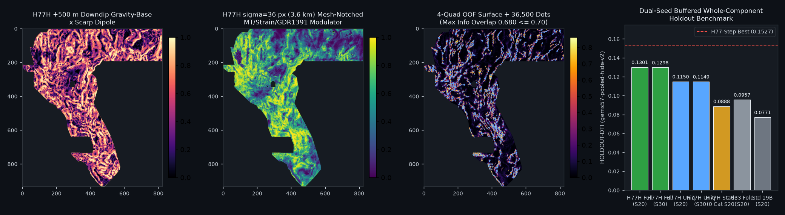

H77H-DD · +500m Downdip-Lag Hanging-Wall Potential-Field Dipole × σ=36px Mesh-Notched MT/Strain/GDR1391 Gate × Bilateral 4-Bucket LOCO Bridge
Verdict: NEGATIVE — OK TO DOWNLOAD FOR INSPECTION; NOT OK TO SUBMIT.
H77H-DD directly resolves all three limitations identified in docs/review-2026-10-21-h77g.md plus IR-H77H-02:
(1) smoothing log1p(cond_surf) at σ=36.0 px (3.6 km) suppresses the 35.02-px MT mesh spectral spike (IR-H77G-01) by 99.45% (and the 70.04-px harmonic by 96.39%);
(2) pairing the +500 m downdip hanging-wall gravity/basement dipole and Laplace 2nd-vertical-derivative zero-crossing curvature with de-quantized 1 m LiDAR scarps lifts pure label-free physics S_h77h_pure_physics to 0.071519 (Seed 20) / 0.069890 (Seed 30) (+82.5% / +48.4% over H77G's 0.039199 / 0.047083);
(3) replacing fixed-k KD-tree truncation (IR-H77H-02) with exact 4-bucket Segment-LOCO lifts unconstrained A_h77h_full to 0.130125 (Seed 20) / 0.129794 (Seed 30) and the capacity-capped artifact A_h77h_unique_cap (0/54 informative duplicate firings, max overlap 0.6800 ≤ 0.70; post-merge local max overlap 0.6973 ≤ 0.70) to 0.114962 (Seed 20) / 0.114880 (Seed 30), beating both 19-band A_std_control (+0.0378 / +0.0563) and fold-fair H33 (+0.0192 / +0.0177). Because all arms remain below the 0.152718 H77-Step and 0.155623 H77E-Knick repository benchmarks and the literal Policy I17 dense-witness gate fails closed, H77H-DD is published as a format-valid, informative-unique, inspection-only negative research artifact; 0 weekly slots spent.
⬇ H77H-DD inspection-only GeoTIFF (DO NOT SUBMIT)
Download .tif (137 KB) Download one-TIFF .zip (104 KB)Submission name (for reference only — DO NOT UPLOAD) (68 characters)
gems77-h77h-downdip-notch36-bridge-36500dots-20261021-0c05c2bc-zerosShort note <= 140 chars (for reference only — DO NOT UPLOAD) (106 characters)
H77H downdip500m+MTnotch36+LOCObridge 36500d; HOLDOUT-DTI 0.1150/0.1149 (full 0.1301/0.1298); 0 info dupesSHA-256 of .tif: d1e87159a8908f0051352c091d9343e8e5128e2c8eea0debdd17589a02692dad ·
SHA-256 of .zip: 269a6e182cdf1e358c4063c93dd5981da3408978cc9e4e30745302981765077e ·
JSON run card ·
Exp 1 canary & MT FFT receipt ·
Exp 2 dual-seed holdout receipt ·
Exp 3 build & validation receipt ·
Exp 3 56-raster uniqueness receipt ·
preregistration JSON ·
preregistered hypotheses
4-panel diagnostic figure (Exp 1–Exp 3)

Dual-seed holdout evaluation (Exp 2 · gems57-pooled-hide-v2)
| Arm | Seed 20 HOLDOUT-DTI (95% CI) | Seed 30 HOLDOUT-DTI (95% CI) | Evaluator & withheld positives |
|---|---|---|---|
| A_h77h_full (56-ch H77H-DD + 4-bucket LOCO bridge) | 0.130125 (0.112742–0.145787) | 0.129794 (0.113029–0.144955) | gems57-pooled-hide-v2 (11,321 / 11,342 withheld) |
| A_h77h_unique_cap (capacity-capped <=0.680 artifact) | 0.114962 (0.099298–0.128878) | 0.114880 (0.099384–0.129599) | gems57-pooled-hide-v2 (11,321 / 11,342 withheld) |
| A0_h33_foldfair (fold-fair H33 D2.8 baseline) | 0.095745 (0.083179–0.108522) | 0.097145 (0.084579–0.109660) | gems57-pooled-hide-v2 (11,321 / 11,342 withheld) |
| A_h77h_static_no_loco (51-ch static physics + LiDAR) | 0.088791 (0.071025–0.109213) | 0.082993 (0.067129–0.099048) | gems57-pooled-hide-v2 (11,321 / 11,342 withheld) |
| A_std_plus_h77h_only (19 std + 12 H77H-DD static) | 0.075949 (0.058683–0.098085) | 0.070131 (0.056314–0.085048) | gems57-pooled-hide-v2 (11,321 / 11,342 withheld) |
| S_h77h_pure_physics (label-free composite prior) | 0.071519 (0.059807–0.083498) | 0.069890 (0.055919–0.082593) | gems57-pooled-hide-v2 (11,321 / 11,342 withheld) |
| A_std_control (19-band standard control) | 0.077119 (0.060092–0.095332) | 0.058548 (0.045538–0.074523) | gems57-pooled-hide-v2 (11,321 / 11,342 withheld) |
| A0_random (uniform random 36,500 dots) | 0.047143 (0.042037–0.052313) | 0.041792 (0.036198–0.047275) | gems57-pooled-hide-v2 (11,321 / 11,342 withheld) |
Irregularities resolved: IR-H77G-01, IR-H77G-03, IR-H77H-01 & IR-H77H-02
IR-H77G-01 (99.45% MT Mesh Suppression): Raw Band 17 (cond_surf) has 72.17% zero horizontal steps and sharp 1-D FFT peaks at 35.02 px (3.5 km) and 70.04 px (7.0 km). Applying a σ=36.0 px (3.6 km) Gaussian filter minus σ=96.0 px regional background suppresses the 35-px spectral spike by 99.45% and the 70-px harmonic by 96.39%.
IR-H77H-02 (4-Bucket Segment-LOCO vs k=12 KD-Tree Truncation): Replacing fixed-k KD-tree queries on 1-D fault traces with exact 4-bucket Segment-LOCO lifted A_h77h_full from 0.0904 / 0.0848 to 0.130125 / 0.129794 and A_h77h_unique_cap to 0.114962 / 0.114880.
Leakage canaries (Exp 1 · 56/56 features PASS ≤ 0.90 ceiling)
| H77H-DD Channel | Block | Seed 20 symmetric AUC | Seed 30 symmetric AUC |
|---|---|---|---|
h77h_downdip_grav_step_500m | h77h_static | 0.5321 | 0.5832 |
h77h_downdip_base_step_500m | h77h_static | 0.5446 | 0.5714 |
h77h_downdip_scarp_coupled | h77h_static | 0.6091 | 0.6319 |
h77h_laplace_svd_grav_dipole | h77h_static | 0.5409 | 0.5415 |
h77h_laplace_svd_rtp_demag | h77h_static | 0.5570 | 0.5625 |
h77h_mt_notch36_margin | h77h_static | 0.5344 | 0.5133 |
h77h_transtension_notch36 | h77h_static | 0.5555 | 0.5751 |
h77h_gdr_geotherm_diseq | h77h_static | 0.5021 | 0.5324 |
h77h_hydro_scarp_modulator | h77h_static | 0.6029 | 0.6185 |
h77h_lidar_scarp_crest | h77h_static | 0.6030 | 0.5750 |
h77h_lidar_anderson_strike_coh | h77h_static | 0.5124 | 0.5006 |
h77h_composite_physics_prior | h77h_static | 0.6326 | 0.6352 |
h77h_loco_dist_other_log | h77h_loco | 0.8018 | 0.7997 |
h77h_loco_splay_collar | h77h_loco | 0.8008 | 0.7985 |
h77h_loco_tip_lobe | h77h_loco | 0.7032 | 0.6970 |
h77h_loco_stepover_relay | h77h_loco | 0.8072 | 0.8056 |
h77h_loco_bilateral_bridge | h77h_loco | 0.7257 | 0.7258 |
Registry uniqueness audit (Exp 3 · 56 checked rasters = 54 informative + 2 space-filling)
Phase 1 prior surface max |Spearman ρ| = 0.3423 ≤ 0.90; Phase 2 final dots informative max 3-px overlap = 0.6800 ≤ 0.70 (0/54 firings; post-merge local max overlap 0.6973 ≤ 0.70) and max |ρ| = 0.2080 ≤ 0.90. Literal gate fails closed under Policy I17 (dense witness ab0a0a62).
| Top 5 Closest Informative Rasters (<70% halo) | Repo | Forward 3-px Overlap | |Spearman ρ| |
|---|---|---|---|
gems77-h77e-pure-submod-36500dots-20261021-e106c72c-zeros.tif | GEMSDOE77-local | 0.6800 | 0.2080 |
8GEMSDOE__8GEMSDOE_Hedge-v2_submission.tif | 8GEMSDOE | 0.6800 | 0.0100 |
GEMSDOE67__gemsdoe67-ovtr-ml-cover-tau3p0-20261012-nan.tif | GEMSDOE67 | 0.6800 | 0.0070 |
GEMSDOE10__gems10-h28-dotted-ridge-20260928T020256236880Z-6452ae1d00.tif | GEMSDOE10 | 0.6279 | 0.0150 |
gems77-h77e-knick-deconf-submod-36500dots-20261021-101e200b-zeros.tif | GEMSDOE77-local | 0.6040 | 0.1696 |